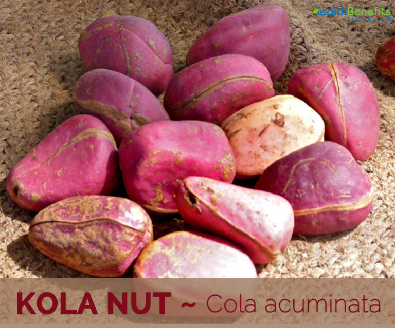

The cola Nut, a gift from the rain forests of West Africa. is a bitter yet refreshing nut with a long hidtory in Africa cultures. It grows on the kola tree, native to countries like Nigeria, Ghana, and Sierra leone.

Ways to Enjoy Cola nuts:
Chewing raw: Traditionally, kola nuts are chewed raw for their stimulating effect. The bitterness is offen masked with sugar or kola nut candies.
Beverages: Kola nuts are used to make a variety of refreshing drinks. They can be boiled with water and spicies for a home made beverage or used asa flavoring in commercially produced sodas.
Ground into powder: Cola nut powder is used in ceremonies and rituals in some african cultures. It can be added to food or drinks for an extra caffeine boost.
**Social Significance:** Kola nut holds culturals significance in many West Africa societies. They are often offered to guests as a sign of hospitality and respect. They are also used in traditonal ceremonies and celebrations.
Health Benefits(Disclaimer: Consult a doctor before consuming ):
Increased alertness: Kola nuts contain caffeine, which can improve alertness and focus.
Potential digestive benefit: Some studies suggest kola nuts may aid digestion
Antioxidants property : Kola nuts may have antioxidant properties that can benefit overral health(more research needed)
**Important notice:**While kola nuts offer potential benefits, its crucial to consume them in moderation due to the caffeine content. Consult a doctor before consuming kola nuts, especially if you have any underlying health condition.